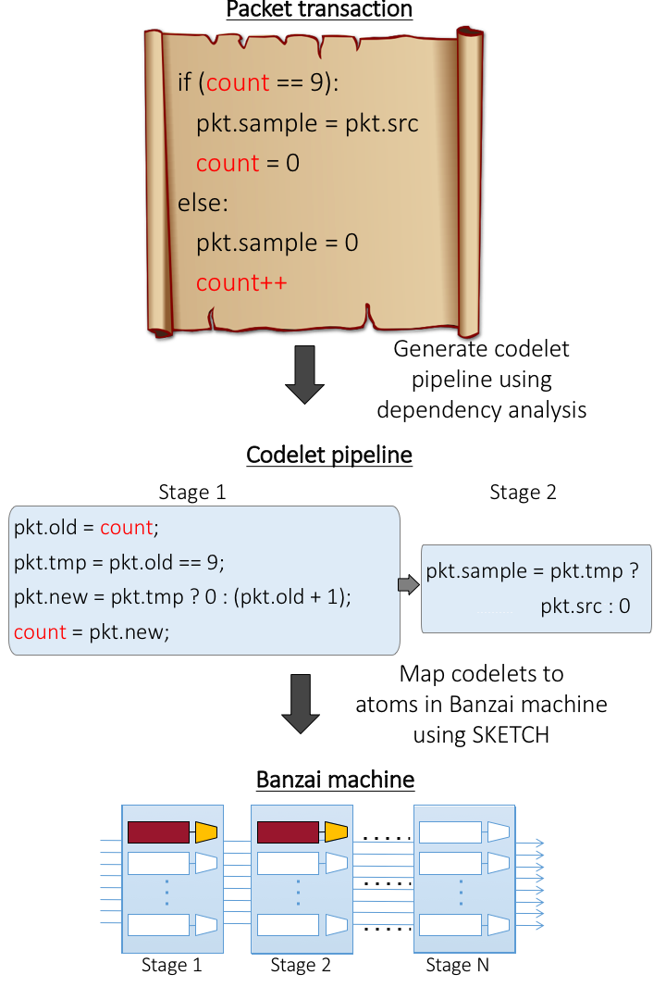
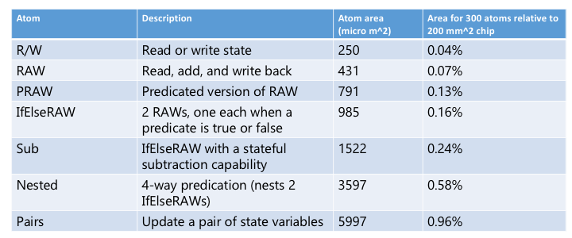

by Anirudh Sivaraman, Alvin Cheung, Mihai Budiu, Changhoon Kim, Mohammad Alizadeh,
Hari Balakrishnan, George Varghese, Nick McKeown, and Steve Licking
MIT CSAIL, University of Washington, Barefoot Networks, Microsoft Research, and Stanford University
(SIGCOMM 2016)
Domino is a system to program the data plane of high-speed programmable routers and help design such programmable routers in the first place. Domino provides two constructs: a high-level abstraction called a packet transaction that allows programmers to conveniently express data-plane algorithms, and a low-level abstraction called an atom that allows router designers to specify their instruction sets. A compiler automatically configures atoms from packet transactions, and can also be used interactively to design atoms.
The Domino paper Source codeWhat motivated this work?
Today, the internals of a data network (i.e., the routers and switches that forward packets) are largely treated as fixed devices whose functionality cannot be modified. This is because they are built out of dedicated hardware specialized to forwarding. Further, this hardware cannot be modified once built.
As a result, there is no pathway to trying out any algorithm that requires changing switch hardware. Examples of these include algorithms for network measurement, congestion control with network support, network security algorithms and load balancing---essentially anything that modifies or inspects the packet (header or data) as it transits the switch. Our goal was to see how to make router hardware flexible enough to support such algorithms, while still providing high performance.
How does Domino work?
The Domino system has three main ideas. First is an abstraction for programming algorithms called packet transactions and an imperative language, called Domino, to program them. Second is a model for how switch hardware called Banzai, which allows us to experiment with different switches in simulation. Third, a compiler from Domino programs to Banzai switches. We describe each below.
A programmer first writes code for a packet-processing algorithm using a packet transaction. A packet transaction is a block of code written in an imperative language called Domino. Intuitively, packet transactions capture the packet processing logic for any packet. An example of a packet transaction is an algorithm that counts from 0 to N-1 and samples every Nth packet. Other examples used in our paper are available here.
Packet transactions provide simple semantics: the programmer sees transactions executing serially across packets with no overlap of transaction execution between packets. The underlying switch hardware, however, is heavily pipelined, with several tens of pipeline stages operating on every packet.
To represent this hardware and experiment with different switch hardware, we created a machine model called Banzai. Banzai is a C++ simulator of programmable switch hardware.
To represent the hardware's instruction set, we introduced the notion of an atom, which represents atomic operations that are supported natively by the switch hardware. Atoms are atomic in the sense that any updates to switch state as part of the atom's operation are visible to the next packet arriving at that atom. One example atom allows the programmer to increment a switch counter by a programmable packet field, the updated value of the counter is available to the very next packet. Several example atoms are available here.
Banzai lets us experiment with different programmable switches by creating an array of such atoms: the horizontal axis represents the number of stages in the pipeline and the vertical axis represents the number of atoms that can operate in parallel on a packet in each stage.
The final piece is the compiler, which goes from packet transactions to atom configurations. Unlike a traditional compiler, however, the Domino compiler can reject programs because they cannot be supported by the switch's atoms. As an example, an algorithm that needs to atomically increment a counter will not run on hardware that doesn't provide an atom for this counter. This is unavoidable: a switch pipeline is designed to run at a specific rate (also known as the line rate) regardless of the workload thrown at it, so some programs will inevitably be too complex for the pipeline.

What algorithms can/can't you express in Domino?
Formally, any algorithm that doesn't have an unbounded for loop. The Domino language doesn't have for loops because there is no sensible ways to process a packet forever in a switch that guarantees line rate under all circumstances. Domino also forbids acess to packet payloads, which is required for algorithms like deep-packet inspection, because it is challenging to parse these payloads at the high speeds supported by switches today.
How does the compiler work?
The compiler has two main steps. First, it goes from the sequential packet transaction provided by the programmer to a pipeline of codelets: small code fragments that, if run atomically, guarantee the packet transaction's semantics. This process requires us to track dependencies between different operations within the same packet transaction, and more importantly, different operations across different packet transactions (through state variables). Section 4.2 of the paper explains this in further detail.
Once we have the codelet pipeline, we map each codelet in the pipeline to an atom available in the hardware. To do this, we ask the question: can we configure the atom so that it implements a given codelet? By configuring the atom, we mean setting certain configuration bits such as the choice of which packet field to add to an atomic counter, or an immediate operand used by the atom. This is exactly the problem tackled by program sketching, where "holes" in an incomplete program (in our case, configuration bits in an atom) need to be filled up to match a spec (codelets).
For this atom mapping problem, we use the SKETCH tool, which implements the algorithm from the program sketching paper above. As a result, we directly use SKETCH as the language to represent our atoms.
How did you design the atoms?
We went through some of our example programs, and identified stateful operations in them. We then created an atom covering these operations. For example, a bloom filter requires the ability to either read or write a bit in an array, but not the ability to read, add, and write back.
With the atom we just created to read/write a bit, we tried to compile more example programs. Inevitably, some program wouldn't compile. For instance, a heavy-hitter detection algorithm employs a count-min sketch, which internally requires the ability to increment an array entry, which the simpler read/write atom above can't support. We keep iterating till we can generate a single atom that covers all the algorithms we care about.
Do these atoms generalize to unanticipated use cases?
We don't know for sure. We looked at a subset of our examples to design our 7 atoms. We found that some atoms that we designed for one algorithm also turned out to be useful for a new one: for instance, we designed the predicated read-add-write atom (conditionally update a running sum) with flowlet switching in mind, but it turned out to be useful for the Rate-Control Protocol as well.
Whether this is more generally true is an interesting question that we don't have an answer to. While we took some care to ensure we were developing future-proof atoms, answering this question would require us to create a corpus of algorithms, design atoms based on one subset of the corpus, and then check their utility for a disjoint subset.
Are these atoms practical?
Yes. We wrote these atoms as Verilog circuits and synthesized them to a recent 32-nm transistor library. All atoms meet timing at 1 GHz (the clock rate of a typical switch pipeline) and cost very little area in silicon. These numbers are available in Table 4 of the paper and are also reproduced below.

What if the compiler rejects the program?
For now, the programmer modifies the program and tries it again. You could imagine running an "approximated version" of the program, or providing compiler hints that tell the programmer how to fix it. The right interface to a programmer when the program is rejected is still unclear. However, one thing is inherent to a programmable switch: there will be programs that cannot be run with transactional semantics at line rate, so we either need to reject them or relax their semantics. This is unlike a software router, where all programs run, but program performance is variable and depends on program complexity.
Does the compiler accept all programs that can run on the switch?
No, the compiler does the best it can and doesn't currently optimize very much. For instance, it may be possible (and desirable) to "fuse" two codelets into the same atom, when a switch is strapped for atoms. However, by not carrying out this and other potential optimizations, the compiler may conservatively reject a correct program.
How does this relate to software-defined networking?
Software-defined networking---at least as embodied by OpenFlow---allows an operator to flexibly specify the router's control plane: e.g., which packets should take which paths within the network (routing), and whether packets on certain ports should be dropped (access control). It does so by exposing a unified interface to the routing tables across many switches (OpenFlow) and allowing a central entity (the control program) to populate these routing tables as desired.
To ensure it caters to the common denominator of switches, OpenFlow doesn't allow you to change the fundamental packet processing functionality of the switch: it is still restricted to standard forwarding based on exact, ternary, or longest-prefix matches. This work can be viewed as extending the benefits of software-defined networking to programming the data plane as well.
How does this relate to recent work on programmable switches?
This work is certainly inspired by work on programmable switch architectures. However, these switches still support fairly limited state manipulation at high speed (e.g., incrementing a counter). One of our goals was to formalize these emerging switch architectures through a simple machine model (Banzai) that captures their essence.
How does this relate to P4?
The P4 programming language is ideally suited to programming packet-processing tasks that don't manipulate state on the switch, e.g., packet forwarding and access control. However, it's a very low-level interface for programming data-plane algorithms that manipulate state because it requires us to manually configure a programmable switch pipeline to implement the algorithm. For many algorithms, e.g., CoDel, the algorithm is best expressed as a snippet of code in an imperative language.
Our compiler backend can autogenerate P4 from packet transactions written in the Domino language. Looking to the future, we hope this work informs high-level abstractions for P4.
This work is by
Anirudh Sivaraman,
Alvin Cheung,
Mihai Budiu,
Changhoon Kim,
Mohammad Alizadeh,
Hari Balakrishnan,
George Varghese,
Nick McKeown, and
Steve Licking.
For questions/comments, please e-mail anirudh at csail dot mit dot
edu